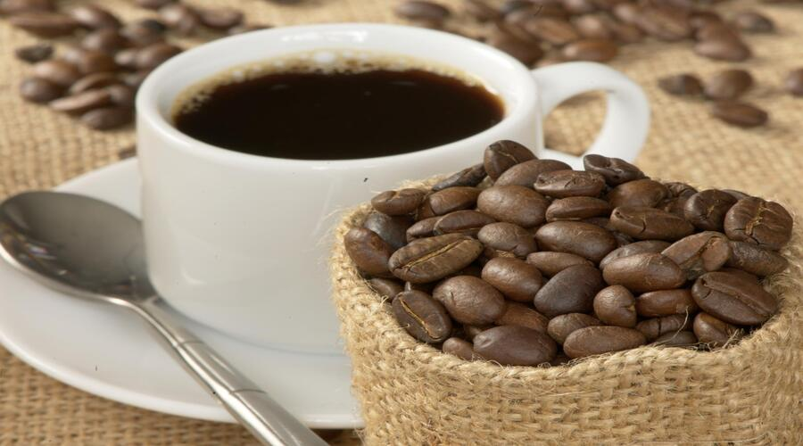
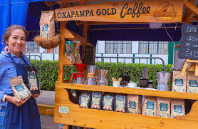
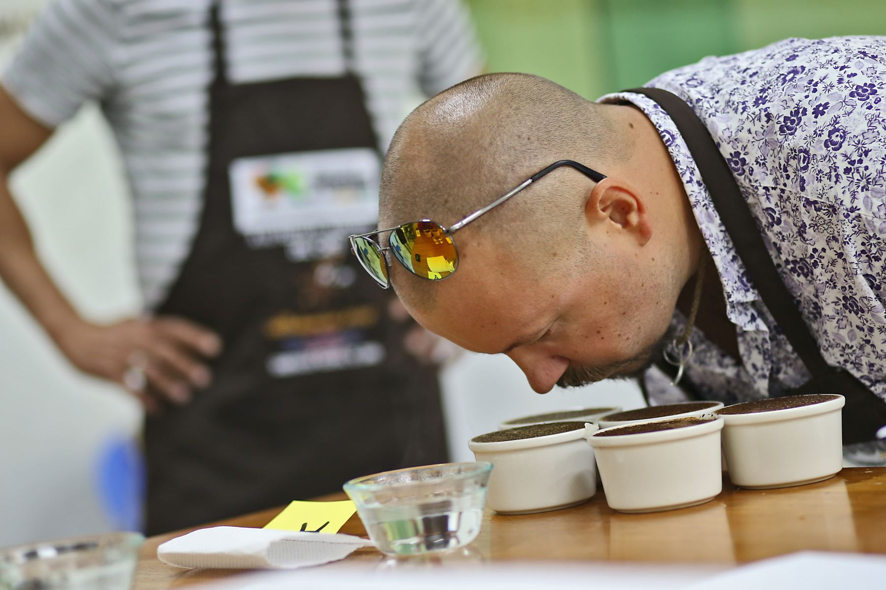

Festival del Café: Celebración del grano de oro en Oxapampa
El Festival del Café en Oxapampa es un evento anual que rinde homenaje a los caficultores y a la producción de café en la región. Durante este festival, los visitantes pueden disfrutar de degustaciones, exhibiciones y actividades culturales relacionadas con el café.
Actividades
El festival ofrece una variedad de actividades como concursos de barismo, catas de café, ferias gastronómicas y presentaciones artísticas. Es una excelente oportunidad para conocer más sobre el proceso de cultivo y producción del café en la región.



Horarios y Ubicación
- Ubicación: Oxapampa, región Pasco, Perú.
- Fecha del evento: Generalmente en los meses de junio o julio.
- Entrada: Acceso libre a la mayoría de actividades.
Consejos para Visitantes
- Llega temprano: Para aprovechar todas las actividades y degustaciones.
- Prueba diferentes tipos de café: Oxapampa ofrece una variedad de granos y preparaciones.
- Viste ropa cómoda: Habrá caminatas y recorridos por fincas de café.
- Conoce a los productores: Aprende sobre el proceso de cultivo directamente de los caficultores.
- Apoya la economía local: Compra productos derivados del café como souvenirs.